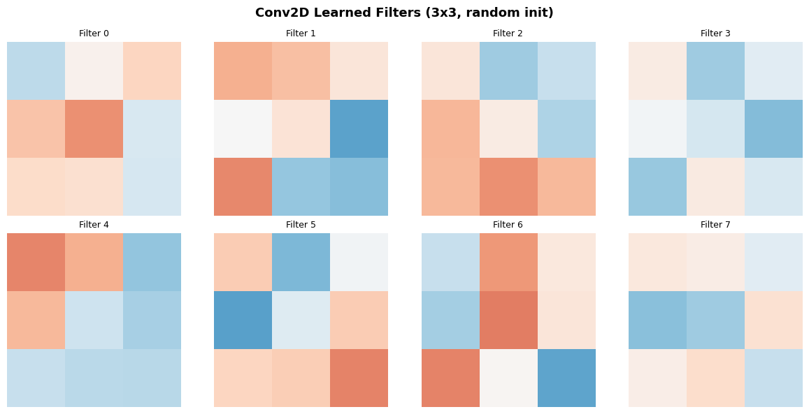
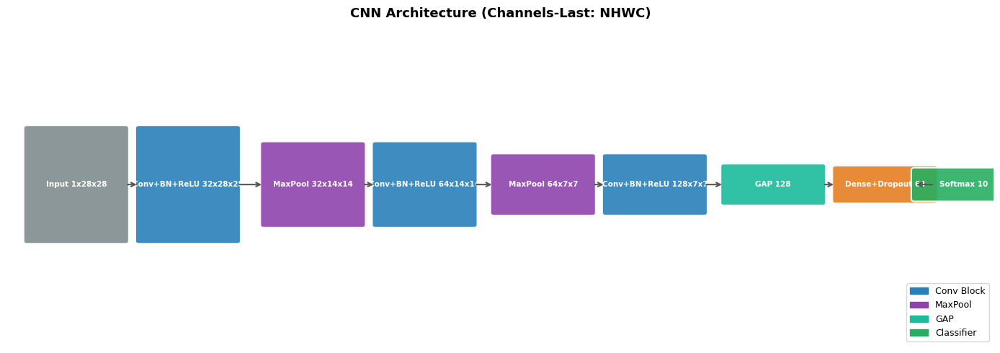
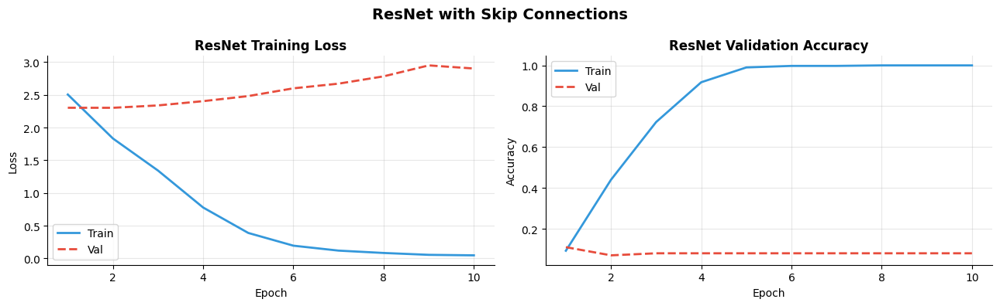

How do you build CNNs in TensorFlow?#
Topics: Conv2D · MaxPooling2D · BatchNormalization · Dropout · Full CNN Architecture · Skip Connections
1. Conv2D & Pooling Layers#
What it is#
Conv2D(filters, kernel_size, strides, padding, activation)— 2D convolutionMaxPooling2D(pool_size, strides)— downsamplingGlobalAveragePooling2D()— reduces each feature map to a single valueInput format:
(batch, height, width, channels)— NHWC (different from PyTorch NCHW)
Key parameters#
filters— number of learned filters (output channels)kernel_size— filter size:3means 3×3padding='same'— output same H,W as input;'valid'— output shrinksstrides=2— halves spatial dimensions (alternative to MaxPool)
Gotchas#
TensorFlow uses NHWC by default — channels last:
(batch, H, W, C)PyTorch uses NCHW — channels first — shapes are different between frameworks
padding='same'is almost always what you want for stacking conv layers
import tensorflow as tf
import numpy as np
import matplotlib.pyplot as plt
# Conv2D basics
conv = tf.keras.layers.Conv2D(filters=16, kernel_size=3, padding='same', activation='relu')
x = np.random.randn(4, 28, 28, 1).astype(np.float32) # NHWC
out = conv(x)
print(f"Input : {x.shape} (batch, H, W, channels)")
print(f"Output: {out.shape} (batch, H, W, filters)")
# Output size with different padding
conv_valid = tf.keras.layers.Conv2D(16, 3, padding='valid')
conv_same = tf.keras.layers.Conv2D(16, 3, padding='same')
print(f"valid padding: {conv_valid(x).shape}")
print(f"same padding: {conv_same(x).shape}")
# MaxPooling
pool = tf.keras.layers.MaxPooling2D(pool_size=2, strides=2)
print(f"After MaxPool: {pool(out).shape}")
# Global Average Pooling
gap = tf.keras.layers.GlobalAveragePooling2D()
print(f"After GAP : {gap(out).shape}")
# Visualize learned filters
model_tiny = tf.keras.Sequential([tf.keras.layers.Conv2D(8, 3, padding='same', input_shape=(28,28,1))])
weights = model_tiny.layers[0].get_weights()[0] # (3, 3, 1, 8)
fig, axes = plt.subplots(2, 4, figsize=(12, 6))
for i, ax in enumerate(axes.flat):
filt = weights[:, :, 0, i]
ax.imshow(filt, cmap='RdBu_r', vmin=-0.5, vmax=0.5)
ax.set_title(f'Filter {i}', fontsize=9)
ax.axis('off')
plt.suptitle('Conv2D Learned Filters (3x3, random init)', fontsize=13, fontweight='bold')
plt.tight_layout()
plt.savefig('tf_conv_filters.png', dpi=120, bbox_inches='tight')
plt.show()
WARNING: All log messages before absl::InitializeLog() is called are written to STDERR
I0000 00:00:1776953933.415942 13028 cudart_stub.cc:31] Could not find cuda drivers on your machine, GPU will not be used.
I0000 00:00:1776953933.462363 13028 cpu_feature_guard.cc:227] This TensorFlow binary is optimized to use available CPU instructions in performance-critical operations.
To enable the following instructions: AVX2 FMA, in other operations, rebuild TensorFlow with the appropriate compiler flags.
WARNING: All log messages before absl::InitializeLog() is called are written to STDERR
I0000 00:00:1776953934.979591 13028 cudart_stub.cc:31] Could not find cuda drivers on your machine, GPU will not be used.
E0000 00:00:1776953936.174708 13028 cuda_platform.cc:52] failed call to cuInit: INTERNAL: CUDA error: Failed call to cuInit: UNKNOWN ERROR (303)
/opt/hostedtoolcache/Python/3.11.15/x64/lib/python3.11/site-packages/keras/src/layers/convolutional/base_conv.py:113: UserWarning: Do not pass an `input_shape`/`input_dim` argument to a layer. When using Sequential models, prefer using an `Input(shape)` object as the first layer in the model instead.
super().__init__(activity_regularizer=activity_regularizer, **kwargs)
Input : (4, 28, 28, 1) (batch, H, W, channels)
Output: (4, 28, 28, 16) (batch, H, W, filters)
valid padding: (4, 26, 26, 16)
same padding: (4, 28, 28, 16)
After MaxPool: (4, 14, 14, 16)
After GAP : (4, 16)

2. Full CNN Architecture#
Standard pattern#
Conv block:
Conv2D → BatchNormalization → Activation → MaxPooling2DClassifier:
GlobalAveragePooling2D → Dense → Dropout → DenseChannels grow as spatial dims shrink: 32 → 64 → 128
Interview Q&A#
What is the difference between Flatten and GlobalAveragePooling2D?
Flatten— unrolls all spatial and channel dims into one long vector → many parametersGlobalAveragePooling2D— averages each channel map to a scalar → fewer parameters, better generalization
What is BatchNormalization in Keras?
Normalizes activations across the batch dimension
training=Trueduring fit (uses batch stats),training=Falseduring inference (uses running stats)In Keras this is handled automatically by
model.fit()andmodel.predict()
Gotchas#
BatchNormalization has a
trainingargument — Keras handles this automatically infit()/predict()Place BatchNorm BEFORE activation for best results in most modern architectures
model(x, training=True)vsmodel(x, training=False)matters when calling manually
import tensorflow as tf
import numpy as np
import matplotlib.pyplot as plt
import matplotlib.patches as mpatches
def build_cnn(num_classes=10):
model = tf.keras.Sequential([
# Block 1
tf.keras.layers.Conv2D(32, 3, padding='same', input_shape=(28, 28, 1)),
tf.keras.layers.BatchNormalization(),
tf.keras.layers.Activation('relu'),
tf.keras.layers.MaxPooling2D(2),
# Block 2
tf.keras.layers.Conv2D(64, 3, padding='same'),
tf.keras.layers.BatchNormalization(),
tf.keras.layers.Activation('relu'),
tf.keras.layers.MaxPooling2D(2),
# Block 3
tf.keras.layers.Conv2D(128, 3, padding='same'),
tf.keras.layers.BatchNormalization(),
tf.keras.layers.Activation('relu'),
# Classifier
tf.keras.layers.GlobalAveragePooling2D(),
tf.keras.layers.Dense(64, activation='relu'),
tf.keras.layers.Dropout(0.3),
tf.keras.layers.Dense(num_classes, activation='softmax'),
])
return model
model = build_cnn()
model.summary()
x = np.random.randn(2, 28, 28, 1).astype(np.float32)
out = model(x, training=False)
print(f"Output shape: {out.shape}")
# Visualize feature map sizes
print("Feature map sizes through CNN:")
model_trace = build_cnn()
x_trace = np.random.randn(1, 28, 28, 1).astype(np.float32)
for layer in model_trace.layers:
x_trace = layer(x_trace, training=False)
if isinstance(layer, (tf.keras.layers.Conv2D, tf.keras.layers.MaxPooling2D, tf.keras.layers.GlobalAveragePooling2D)):
print(f" {layer.__class__.__name__:<25}: {x_trace.shape}")
# Architecture diagram
fig, ax = plt.subplots(figsize=(14, 5))
ax.set_xlim(0, 15); ax.set_ylim(0, 6); ax.axis('off')
ax.set_title('CNN Architecture (Channels-Last: NHWC)', fontsize=13, fontweight='bold')
blocks = [
(0.3, 'Input 1x28x28', '#7F8C8D', 2.8),
(2.0, 'Conv+BN+ReLU 32x28x28', '#2980B9', 2.8),
(3.9, 'MaxPool 32x14x14', '#8E44AD', 2.0),
(5.6, 'Conv+BN+ReLU 64x14x14', '#2980B9', 2.0),
(7.4, 'MaxPool 64x7x7', '#8E44AD', 1.4),
(9.1, 'Conv+BN+ReLU 128x7x7', '#2980B9', 1.4),
(10.9, 'GAP 128', '#1ABC9C', 0.9),
(12.6, 'Dense+Dropout 64', '#E67E22', 0.8),
(13.8, 'Softmax 10', '#27AE60', 0.7),
]
prev_x = None
for x_pos, label, color, width in blocks:
height = width * 0.75
rect = mpatches.FancyBboxPatch((x_pos, 3-height/2), 1.5, height,
boxstyle='round,pad=0.05', facecolor=color, edgecolor='white', linewidth=1.5, alpha=0.9)
ax.add_patch(rect)
ax.text(x_pos+0.75, 3, label, ha='center', va='center',
fontsize=7.5, fontweight='bold', color='white')
if prev_x:
ax.annotate('', xy=(x_pos, 3), xytext=(prev_x+1.5, 3),
arrowprops=dict(arrowstyle='->', color='#555', lw=1.5))
prev_x = x_pos
legend = [mpatches.Patch(color='#2980B9', label='Conv Block'),
mpatches.Patch(color='#8E44AD', label='MaxPool'),
mpatches.Patch(color='#1ABC9C', label='GAP'),
mpatches.Patch(color='#27AE60', label='Classifier')]
ax.legend(handles=legend, loc='lower right', fontsize=9)
plt.tight_layout()
plt.savefig('tf_cnn_arch.png', dpi=120, bbox_inches='tight')
plt.show()
Model: "sequential_1"
┏━━━━━━━━━━━━━━━━━━━━━━━━━━━━━━━━━┳━━━━━━━━━━━━━━━━━━━━━━━━┳━━━━━━━━━━━━━━━┓ ┃ Layer (type) ┃ Output Shape ┃ Param # ┃ ┡━━━━━━━━━━━━━━━━━━━━━━━━━━━━━━━━━╇━━━━━━━━━━━━━━━━━━━━━━━━╇━━━━━━━━━━━━━━━┩ │ conv2d_4 (Conv2D) │ (None, 28, 28, 32) │ 320 │ ├─────────────────────────────────┼────────────────────────┼───────────────┤ │ batch_normalization │ (None, 28, 28, 32) │ 128 │ │ (BatchNormalization) │ │ │ ├─────────────────────────────────┼────────────────────────┼───────────────┤ │ activation (Activation) │ (None, 28, 28, 32) │ 0 │ ├─────────────────────────────────┼────────────────────────┼───────────────┤ │ max_pooling2d_1 (MaxPooling2D) │ (None, 14, 14, 32) │ 0 │ ├─────────────────────────────────┼────────────────────────┼───────────────┤ │ conv2d_5 (Conv2D) │ (None, 14, 14, 64) │ 18,496 │ ├─────────────────────────────────┼────────────────────────┼───────────────┤ │ batch_normalization_1 │ (None, 14, 14, 64) │ 256 │ │ (BatchNormalization) │ │ │ ├─────────────────────────────────┼────────────────────────┼───────────────┤ │ activation_1 (Activation) │ (None, 14, 14, 64) │ 0 │ ├─────────────────────────────────┼────────────────────────┼───────────────┤ │ max_pooling2d_2 (MaxPooling2D) │ (None, 7, 7, 64) │ 0 │ ├─────────────────────────────────┼────────────────────────┼───────────────┤ │ conv2d_6 (Conv2D) │ (None, 7, 7, 128) │ 73,856 │ ├─────────────────────────────────┼────────────────────────┼───────────────┤ │ batch_normalization_2 │ (None, 7, 7, 128) │ 512 │ │ (BatchNormalization) │ │ │ ├─────────────────────────────────┼────────────────────────┼───────────────┤ │ activation_2 (Activation) │ (None, 7, 7, 128) │ 0 │ ├─────────────────────────────────┼────────────────────────┼───────────────┤ │ global_average_pooling2d_1 │ (None, 128) │ 0 │ │ (GlobalAveragePooling2D) │ │ │ ├─────────────────────────────────┼────────────────────────┼───────────────┤ │ dense (Dense) │ (None, 64) │ 8,256 │ ├─────────────────────────────────┼────────────────────────┼───────────────┤ │ dropout (Dropout) │ (None, 64) │ 0 │ ├─────────────────────────────────┼────────────────────────┼───────────────┤ │ dense_1 (Dense) │ (None, 10) │ 650 │ └─────────────────────────────────┴────────────────────────┴───────────────┘
Total params: 102,474 (400.29 KB)
Trainable params: 102,026 (398.54 KB)
Non-trainable params: 448 (1.75 KB)
Output shape: (2, 10)
Feature map sizes through CNN:
Conv2D : (1, 28, 28, 32)
MaxPooling2D : (1, 14, 14, 32)
Conv2D : (1, 14, 14, 64)
MaxPooling2D : (1, 7, 7, 64)
Conv2D : (1, 7, 7, 128)
GlobalAveragePooling2D : (1, 128)

3. Skip Connections (ResNet-style) with Functional API#
What it is#
Adds the input of a block directly to its output:
output = F(x) + xSolves vanishing gradient in very deep networks
Requires Functional API in Keras — Sequential cannot do branching
Key intuition#
Layer learns the residual (difference), not the full mapping
If a layer is not useful, it can learn F(x)=0 → output=x (identity)
Gradient flows directly backward through the skip connection
Gotchas#
Input and output must have same shape for
x + F(x)— use 1×1 Conv to match if neededUse
tf.keras.layers.Add()not+operator — integrates with Keras graph tracingBatchNorm before addition, activation after is the standard pattern
import tensorflow as tf
import numpy as np
import matplotlib.pyplot as plt
import matplotlib.patches as mpatches
def residual_block(x, filters, stride=1):
shortcut = x
# Main path
out = tf.keras.layers.Conv2D(filters, 3, strides=stride, padding='same')(x)
out = tf.keras.layers.BatchNormalization()(out)
out = tf.keras.layers.Activation('relu')(out)
out = tf.keras.layers.Conv2D(filters, 3, padding='same')(out)
out = tf.keras.layers.BatchNormalization()(out)
# Projection shortcut (if shape changes)
if stride != 1 or x.shape[-1] != filters:
shortcut = tf.keras.layers.Conv2D(filters, 1, strides=stride, padding='same')(x)
shortcut = tf.keras.layers.BatchNormalization()(shortcut)
out = tf.keras.layers.Add()([out, shortcut])
out = tf.keras.layers.Activation('relu')(out)
return out
def build_resnet(input_shape=(28, 28, 1), num_classes=10):
inputs = tf.keras.Input(shape=input_shape)
x = tf.keras.layers.Conv2D(32, 3, padding='same')(inputs)
x = tf.keras.layers.BatchNormalization()(x)
x = tf.keras.layers.Activation('relu')(x)
x = residual_block(x, 32)
x = residual_block(x, 64, stride=2)
x = residual_block(x, 128, stride=2)
x = tf.keras.layers.GlobalAveragePooling2D()(x)
x = tf.keras.layers.Dropout(0.3)(x)
outputs = tf.keras.layers.Dense(num_classes, activation='softmax')(x)
return tf.keras.Model(inputs, outputs)
model = build_resnet()
model.summary()
# Train on fake data
np.random.seed(42); tf.random.set_seed(42)
X = np.random.randn(500, 28, 28, 1).astype(np.float32)
y = np.random.randint(0, 10, 500)
model.compile(optimizer='adam', loss='sparse_categorical_crossentropy', metrics=['accuracy'])
history = model.fit(X[:400], y[:400], epochs=10, batch_size=32,
validation_data=(X[400:], y[400:]), verbose=0)
fig, axes = plt.subplots(1, 2, figsize=(13, 4))
epochs = range(1, 11)
axes[0].plot(epochs, history.history['loss'], color='#3498DB', linewidth=2, label='Train')
axes[0].plot(epochs, history.history['val_loss'], color='#E74C3C', linewidth=2, label='Val', linestyle='--')
axes[0].set_title('ResNet Training Loss', fontsize=12, fontweight='bold')
axes[0].set_xlabel('Epoch'); axes[0].set_ylabel('Loss')
axes[0].legend(); axes[0].grid(True, alpha=0.3)
axes[0].spines['top'].set_visible(False); axes[0].spines['right'].set_visible(False)
axes[1].plot(epochs, history.history['accuracy'], color='#3498DB', linewidth=2, label='Train')
axes[1].plot(epochs, history.history['val_accuracy'], color='#E74C3C', linewidth=2, label='Val', linestyle='--')
axes[1].set_title('ResNet Validation Accuracy', fontsize=12, fontweight='bold')
axes[1].set_xlabel('Epoch'); axes[1].set_ylabel('Accuracy')
axes[1].legend(); axes[1].grid(True, alpha=0.3)
axes[1].spines['top'].set_visible(False); axes[1].spines['right'].set_visible(False)
plt.suptitle('ResNet with Skip Connections', fontsize=14, fontweight='bold')
plt.tight_layout()
plt.savefig('tf_resnet.png', dpi=120, bbox_inches='tight')
plt.show()
Model: "functional_3"
┏━━━━━━━━━━━━━━━━━━━━━┳━━━━━━━━━━━━━━━━━━━┳━━━━━━━━━━━━┳━━━━━━━━━━━━━━━━━━━┓ ┃ Layer (type) ┃ Output Shape ┃ Param # ┃ Connected to ┃ ┡━━━━━━━━━━━━━━━━━━━━━╇━━━━━━━━━━━━━━━━━━━╇━━━━━━━━━━━━╇━━━━━━━━━━━━━━━━━━━┩ │ input_layer_3 │ (None, 28, 28, 1) │ 0 │ - │ │ (InputLayer) │ │ │ │ ├─────────────────────┼───────────────────┼────────────┼───────────────────┤ │ conv2d_10 (Conv2D) │ (None, 28, 28, │ 320 │ input_layer_3[0]… │ │ │ 32) │ │ │ ├─────────────────────┼───────────────────┼────────────┼───────────────────┤ │ batch_normalizatio… │ (None, 28, 28, │ 128 │ conv2d_10[0][0] │ │ (BatchNormalizatio… │ 32) │ │ │ ├─────────────────────┼───────────────────┼────────────┼───────────────────┤ │ activation_6 │ (None, 28, 28, │ 0 │ batch_normalizat… │ │ (Activation) │ 32) │ │ │ ├─────────────────────┼───────────────────┼────────────┼───────────────────┤ │ conv2d_11 (Conv2D) │ (None, 28, 28, │ 9,248 │ activation_6[0][… │ │ │ 32) │ │ │ ├─────────────────────┼───────────────────┼────────────┼───────────────────┤ │ batch_normalizatio… │ (None, 28, 28, │ 128 │ conv2d_11[0][0] │ │ (BatchNormalizatio… │ 32) │ │ │ ├─────────────────────┼───────────────────┼────────────┼───────────────────┤ │ activation_7 │ (None, 28, 28, │ 0 │ batch_normalizat… │ │ (Activation) │ 32) │ │ │ ├─────────────────────┼───────────────────┼────────────┼───────────────────┤ │ conv2d_12 (Conv2D) │ (None, 28, 28, │ 9,248 │ activation_7[0][… │ │ │ 32) │ │ │ ├─────────────────────┼───────────────────┼────────────┼───────────────────┤ │ batch_normalizatio… │ (None, 28, 28, │ 128 │ conv2d_12[0][0] │ │ (BatchNormalizatio… │ 32) │ │ │ ├─────────────────────┼───────────────────┼────────────┼───────────────────┤ │ add (Add) │ (None, 28, 28, │ 0 │ batch_normalizat… │ │ │ 32) │ │ activation_6[0][… │ ├─────────────────────┼───────────────────┼────────────┼───────────────────┤ │ activation_8 │ (None, 28, 28, │ 0 │ add[0][0] │ │ (Activation) │ 32) │ │ │ ├─────────────────────┼───────────────────┼────────────┼───────────────────┤ │ conv2d_13 (Conv2D) │ (None, 14, 14, │ 18,496 │ activation_8[0][… │ │ │ 64) │ │ │ ├─────────────────────┼───────────────────┼────────────┼───────────────────┤ │ batch_normalizatio… │ (None, 14, 14, │ 256 │ conv2d_13[0][0] │ │ (BatchNormalizatio… │ 64) │ │ │ ├─────────────────────┼───────────────────┼────────────┼───────────────────┤ │ activation_9 │ (None, 14, 14, │ 0 │ batch_normalizat… │ │ (Activation) │ 64) │ │ │ ├─────────────────────┼───────────────────┼────────────┼───────────────────┤ │ conv2d_14 (Conv2D) │ (None, 14, 14, │ 36,928 │ activation_9[0][… │ │ │ 64) │ │ │ ├─────────────────────┼───────────────────┼────────────┼───────────────────┤ │ conv2d_15 (Conv2D) │ (None, 14, 14, │ 2,112 │ activation_8[0][… │ │ │ 64) │ │ │ ├─────────────────────┼───────────────────┼────────────┼───────────────────┤ │ batch_normalizatio… │ (None, 14, 14, │ 256 │ conv2d_14[0][0] │ │ (BatchNormalizatio… │ 64) │ │ │ ├─────────────────────┼───────────────────┼────────────┼───────────────────┤ │ batch_normalizatio… │ (None, 14, 14, │ 256 │ conv2d_15[0][0] │ │ (BatchNormalizatio… │ 64) │ │ │ ├─────────────────────┼───────────────────┼────────────┼───────────────────┤ │ add_1 (Add) │ (None, 14, 14, │ 0 │ batch_normalizat… │ │ │ 64) │ │ batch_normalizat… │ ├─────────────────────┼───────────────────┼────────────┼───────────────────┤ │ activation_10 │ (None, 14, 14, │ 0 │ add_1[0][0] │ │ (Activation) │ 64) │ │ │ ├─────────────────────┼───────────────────┼────────────┼───────────────────┤ │ conv2d_16 (Conv2D) │ (None, 7, 7, 128) │ 73,856 │ activation_10[0]… │ ├─────────────────────┼───────────────────┼────────────┼───────────────────┤ │ batch_normalizatio… │ (None, 7, 7, 128) │ 512 │ conv2d_16[0][0] │ │ (BatchNormalizatio… │ │ │ │ ├─────────────────────┼───────────────────┼────────────┼───────────────────┤ │ activation_11 │ (None, 7, 7, 128) │ 0 │ batch_normalizat… │ │ (Activation) │ │ │ │ ├─────────────────────┼───────────────────┼────────────┼───────────────────┤ │ conv2d_17 (Conv2D) │ (None, 7, 7, 128) │ 147,584 │ activation_11[0]… │ ├─────────────────────┼───────────────────┼────────────┼───────────────────┤ │ conv2d_18 (Conv2D) │ (None, 7, 7, 128) │ 8,320 │ activation_10[0]… │ ├─────────────────────┼───────────────────┼────────────┼───────────────────┤ │ batch_normalizatio… │ (None, 7, 7, 128) │ 512 │ conv2d_17[0][0] │ │ (BatchNormalizatio… │ │ │ │ ├─────────────────────┼───────────────────┼────────────┼───────────────────┤ │ batch_normalizatio… │ (None, 7, 7, 128) │ 512 │ conv2d_18[0][0] │ │ (BatchNormalizatio… │ │ │ │ ├─────────────────────┼───────────────────┼────────────┼───────────────────┤ │ add_2 (Add) │ (None, 7, 7, 128) │ 0 │ batch_normalizat… │ │ │ │ │ batch_normalizat… │ ├─────────────────────┼───────────────────┼────────────┼───────────────────┤ │ activation_12 │ (None, 7, 7, 128) │ 0 │ add_2[0][0] │ │ (Activation) │ │ │ │ ├─────────────────────┼───────────────────┼────────────┼───────────────────┤ │ global_average_poo… │ (None, 128) │ 0 │ activation_12[0]… │ │ (GlobalAveragePool… │ │ │ │ ├─────────────────────┼───────────────────┼────────────┼───────────────────┤ │ dropout_2 (Dropout) │ (None, 128) │ 0 │ global_average_p… │ ├─────────────────────┼───────────────────┼────────────┼───────────────────┤ │ dense_4 (Dense) │ (None, 10) │ 1,290 │ dropout_2[0][0] │ └─────────────────────┴───────────────────┴────────────┴───────────────────┘
Total params: 310,090 (1.18 MB)
Trainable params: 308,746 (1.18 MB)
Non-trainable params: 1,344 (5.25 KB)

Interview Q&A#
How do you implement skip connections in Keras?
Must use Functional API — Sequential cannot merge two tensors
tf.keras.layers.Add()([x, shortcut])— element-wise additionProjection shortcut with 1×1 Conv when dimensions differ
Why use GlobalAveragePooling instead of Flatten?
Flatten →
(batch, H*W*C)→ many parameters in subsequent DenseGAP →
(batch, C)→ fewer parameters, stronger regularization, works on any input size
What does strides=2 in Conv2D do vs MaxPooling2D?
Both halve spatial dimensions
Strided Conv is learnable — model decides what to keep during downsampling
MaxPool is not learnable — always takes maximum — better for preserving strong features
Gotchas#
model(x, training=True)vsmodel(x, training=False)— BatchNorm and Dropout behave differentlyIn
model.fit(), Keras passestraining=Trueautomatically during trainingChannel dim is LAST in TF:
(N, H, W, C)— always check before loading PyTorch weights